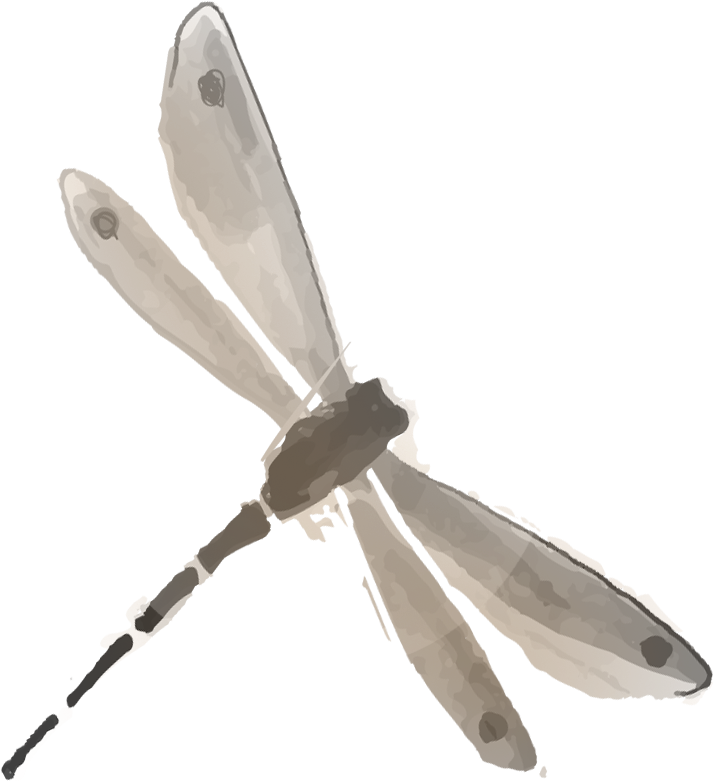
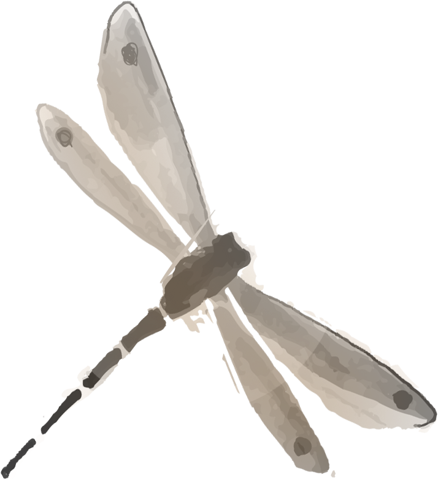

Online Tutorials


Basic Rules
Two players, Black and White, take turns
placing a stone (game piece) of their own color on
a avacant point (intersection) of the grid on a Go board.
Black plays first. If there is a large difference in skill between
the players, the weaker player typically uses Black and is allowed
to place two or more stones on the board to compensatefor the
difference. The official grid comprises 19x19 lines, though the
rules can be applied to any grid size. 13x13 and 9x9 boards
are popular choices to teach beginners, or for playing
quick games. Once placed, a stone may
not be moved to a different point.
liberty

If White plays at A, the black chain loses its last liberty. It is captured and removed from the board.
A vacant point next to a stone is called a liberty for that stone. Stones in a chain share their liberties. A chain of stones must have at least one liberty to stay on the board. When a chain is surrounded by opposing stones so that it has no liberties, it is captured and removed from the board.

 

KO Rule
Players are not allowed to make a move that returns the game to the previous place. This rule, called the ko rule, prevents unending repetition.
As shown in the example pictured: Black has just played the stone marked 1, capturing a white stone at the intersection marked with the red circle. If White were allowed to play on the marked intersection, that move would capture the black stone marked 1 and recreate the situation before Black made the move marked 1. The ko rule therefore prohibits White from playing at the marked intersection immediately. Instead White must play elsewhere, or pass; Black can then end the ko by filling at the marked intersection, creating a five-stone black chain.
An example of a situation in which the ko rule applies
Tools
Chess pieces: the pieces are divided into black and white. Most are oblate (also have double-sided protruding pieces). The number of pieces is 180 in black and white. The pieces were round. China usually uses a flat, convex piece, while Japan uses two convex pieces. The more precious pawn material is agate, shell and so on.

Chess score: a tool for recording chess games, usually in the form of a notebook.
Chess clock: also known as a timer, you can use a timer to limit the player’s time in a formal game. Informal matchups do not normally use timers.

Chessboard: there are 19 horizontal and vertical parallel lines, consisting of 361 intersection points. Surface marked with nine small dots, known as the star, the central star also known as the “heavenly Yuan.” In the learning of enlightenment, there is a chessboard of 13 × 13, 9 × 9. In addition, some of the modern unearthed pieces are rare, 15 × 15, 17 × 17 chessboard.
Contact Us

Wuhan Textitle University
2896145340@qq.com
13135664660


Reference
Copyrights ©Less & More all right reserved.